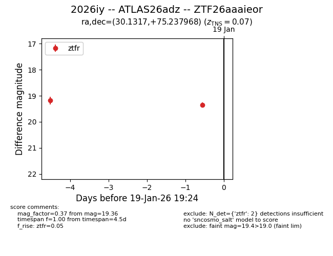
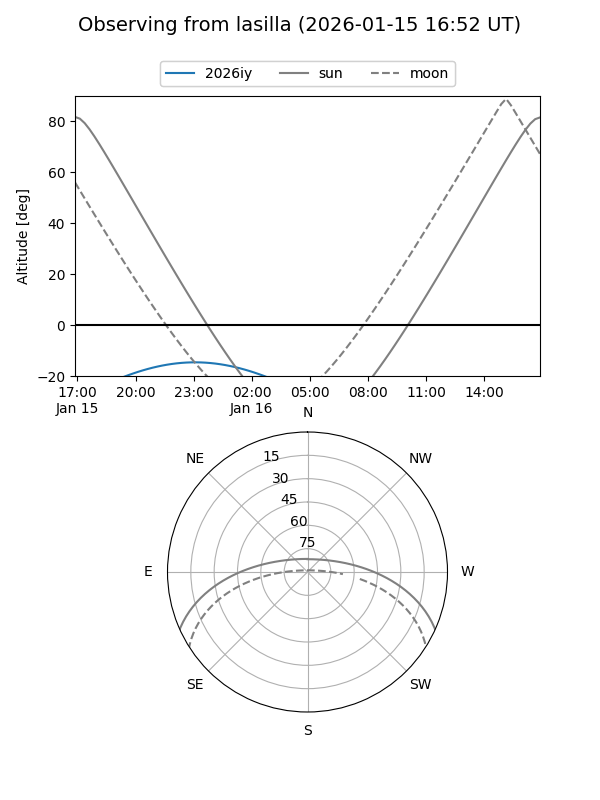
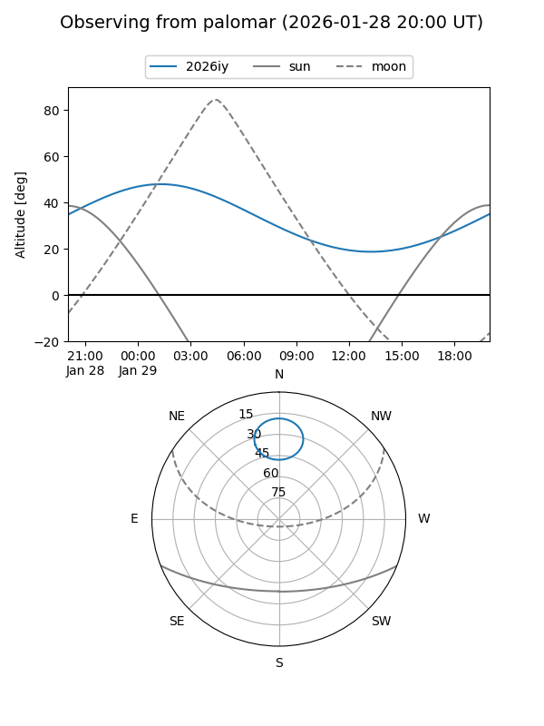

2026iy
Target 2026iy at 2026-01-20 19:21
Aliases and brokers:
FINK: link
Lasair: link
ALeRCE: link
TNS: link
YSE: link
alt names
ZTF26aaaieor (ztf,fink_ztf)
2026iy (tns,yse)
ATLAS26adz (atlas)
Coordinates:
equatorial (ra, dec) = 30.1317,+75.23797
equatorial (HMS+DMS) = 02:00:31.60,+75:14:16.68
galactic (l, b) = (127.3845,+12.96677)
Flags:
confirmed ia
Photometry:
last ztfr=19.36
2 ztfr detections
Lightcurve

Visibility


Additional plots